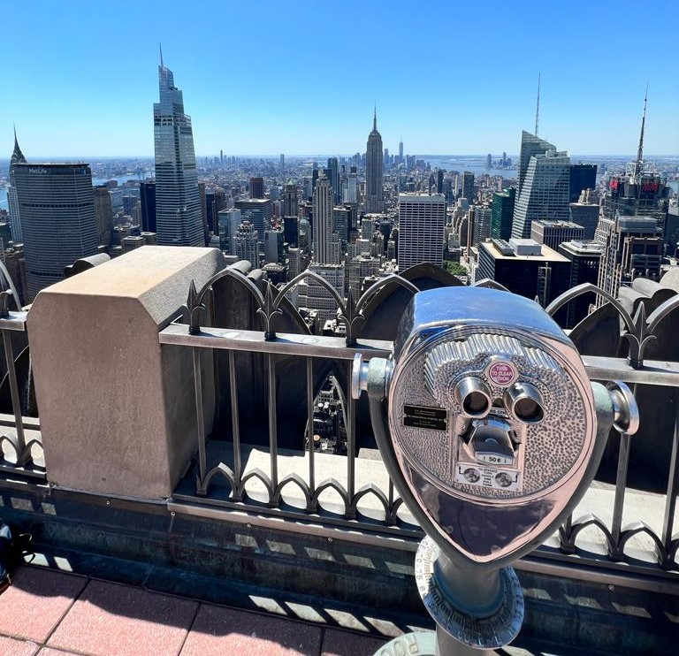
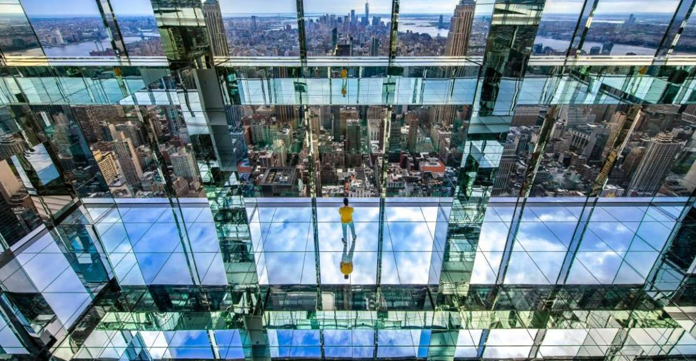

Se encuentra en el barrio de Hudson Yards, es el mirador al aire libre más alto de los Estados Unidos y además cuenta con un espacio con piso de vidrio! No apto para personas que sufren de vértigo.
A su lado se encuentra The Vessel, un nuevo edificio futurista repleto de escaleras que tiene forma de vasija y anteriormente era visitado como mirador al aire libre. Hoy en día se encuentra cerrado por seguridad.
Este paseo se encuentra a la orilla del río con vistas al Brooklyn Bridge o Puente de Brooklyn. Este recorrido incluye bancos, mesas y espacios verdes aptos para sentarte y hacer un picnic así como disfrutar del día, siempre y cuando no este lloviendo. Cruzando el puente, al llegar al Empire Fulton Ferry Park podrás ver el Brooklyn Bridge iluminado con los rascacielos de Manhattan de fondo.
Este icónico edificio fué durante mucho tiempo el rascacielos más alto del mundo. Desde su terraza puede verse la zona sur de Manhattan a través de sus binoculares de hierro antiguos.
Horario de visita: todos los días de 9hs a 2hs por la noche
Este mirador nos permite tener unas magníficas vistas del norte de la isla de Manhattan. Desde aquí podrás ver el Empire State y un poco del Central Park. Esta ubicado en el centro comercial Rockefeller Center. Cuenta con una zona acristalada y otra descubierta.
Algunas recomendaciones: llegar un rato antes ya que suele haber fila para subier. Aunque en cualquier horario vas a tener unas vistas espectaculares, se recomienda disfrutar allí la puesta de sol.
Horario de visita: todos los días de 10hs a 22hs, el último ascensor sube a la 21:10hs
Este es el edificio más alto de la ciudad y uno de los más altos del mundo. Se construyó como homenaje a las antiguas Torres Gemelas, como un edificio de oficinas, y con la incorporación de varios miradores de 360 grados a más de 400 metros de altura, lo que lo convierte en uno de los miradores más visitados de la ciudad.
Este mirador es pago, tiene un precio elevado. Se recomienda comprar las entradas con anticipación para ahorrar filas.
Horario de visita: todos los días de 10hs a 18hs
Terminamos el listado con The Summit, al día de hoy es un infaltable. Se sube por dos ascensores de alta velocidad en el exterior del edificio. Para los que no tienen miedo y quieren experimentar un poco de adrenalina se puede caminar por cubiculos de cristal en el piso 92, estos cubiculos sobresalen de la fachada y puedes ver la avenida a tus pies. Se recomienda ir con tiempo ya que es muy concurrido y muchas veces se tarda en subir. Los mejores momentos para visitarlo son al amanecer y al atardecer.
Horario de visita: todos los días de 9hs a 22:30hs
